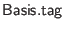

FFI modules may introduce new tags as values with  types. See basis.urs for examples of how tags are declared. The identifier of a tag value is used as its rendering in HTML. The Ur/Web syntax sugar for XML literals desugars each use of a tag into a reference to an identifier with the same name. There is no need to provide implementations (i.e., in C or JavaScript code) for such identifiers.
The onus is on the coder of a new tag's interface to think about consequences for code injection attacks, messing with the DOM in ways that may break Ur/Web reactive programming, etc.